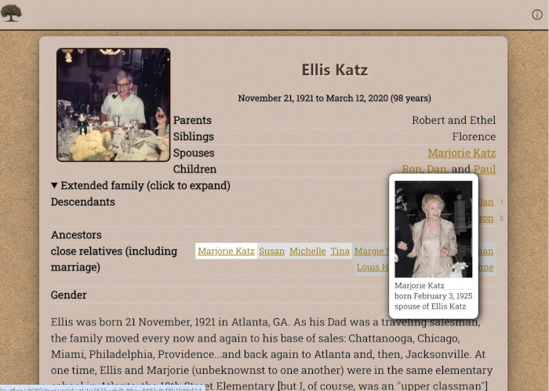
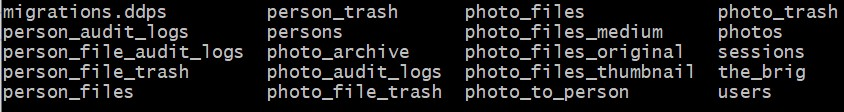
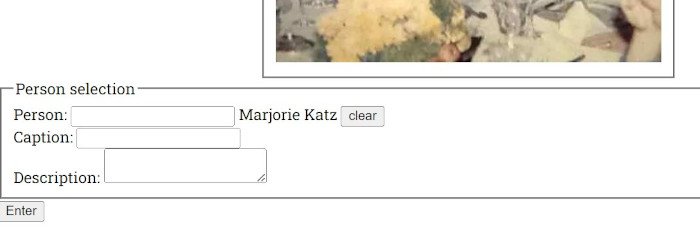

This is a family tree and memorial site.
The homepage provides a search capability for individuals with entries. The results are links which will provide further information about that person, including their close relatives. In many cases, a biography is provided, with interesting information about that person's life.
The most basic building block of the site is adding new persons. This is done by clicking on "Create New Person" in the navigation header. You will see a form. If this is the first person being added, it will not yet be possible to connect this person to others.
Names can be very complex, which is why there is only one field for a name. You may enter any characters here.
This may be left blank at first. If a URL is provided here, it will show as that person's thumbnail / header photo. Adding more photos is done in the biography section further down.
These are crucial. Persons will only be shown on the homepage if they are deceased (have a death date) and have an associated photograph.
If a date exists but is unknown, select unknown. For example, if you know that aunt Bertha died last century but the date is unknown, mark unknown. On the other hand, if someone is still alive, then leave their death blank. Similarly, if you only have a year for a date, select year-only.
In the relations section, it is possible to add links to this person's siblings, spouses, etc. When first starting, there will not be anyone else to add. Otherwise, you may search by entering part of a name in the "Search relations" input field, and suggestions will be shown. Once you have selected a person, click "copy", or just select and ctrl-c to copy that data to your clipboard to paste into the proper relation field.
By adding relations in this way, the system will build a graph of relationships and be able to show the person's extended family.
The formatting of the relations inputs is flexible. You may write any comments you wish to explain the relationships. For example, in the siblings section you might describe certain persons as being half-siblings. Nonetheless, when the person is saved, the relationship graph will get rebuilt with a simpler approach - siblings are siblings, parents are parents, etc.
This is the area where biographical information is provided. Nearly all HTML5 values are allowed here, except for script tags. Be creative! This is a great place to go into detail if you have it - pictures, poems, descriptions are all great to include. You may reference other websites using anchor tags, or locally-held images. As an aside, there is a "review photos" button at the bottom of this input - if you click there, it is possible to copy images to your clipboard for placement in this section.
Note the buttons in the photo section. The "Copy img" button will put a copy of an img element pointing at this picture on your clipboard for pasting. The "Copy URL" provides a relative URL for pasting into the URL field at the top of the person information form. Finally, the "Copy figure" button lets you copy a whole figure, which includes the image as well as the caption and description text.
If you get into the habit of storing interesting information per photo, the figure will be a very handy tool for building up a biography.
The caption and description text areas are not writable on this page, but they are when visiting the person's photo page.
This field is for unpublished information that is useful when researching a person, or is simply not desired to be seen.
By clicking "Add Extra Field", it is possible to add some further organized data, such as wedding dates, immigration dates, or birth location. At this time, it is purely informational, although it may be used in the future to improve search capabilities.
It is allowable to set dates as year-only.
One important hint: if you have already saved a person's information and want to edit an extra field, do so by creating a new extra field with the proper information, then delete the obsolete field.
There are some utility pages you will find helpful.
The header bar at the top will provide navigation to other pages. After saving a person, when looking at their detail page or edit page, there will be links to their photos (Edit Photos), their admin panel / search result (Inlist), and editing the person (Edit Person)
Accessed by "List all persons", this search lets you explore all persons in the database, unlike the homepage search which only shows deceased persons with photos. The search field operates on names. It is also possible to sort, see the dropdown.
Each person's entry here allows the administrator to view the person, edit, or see their photo page. There is also an option to delete the person, which will also delete that person's photographs - be careful here.
While we are on the subject of deletion - when persons are deleted, their information is removed from the ordinary database and stored in a directory labeled "person_trash". Here are the typical database directories:
The photos page is where new photos are added for persons. This is a key component of the system, since it allows users to build up collections of documented photographs per person, which greatly empowers the process of building a biography.
In short: the panel at the top is where new photos are added. Either click the button to choose a photo from the file system, or drag a photo into the section. A form will pop up with a preview and inputs for caption and description. The text inputs are all editable, so do not worry if the text is imperfect at this point.
Once a photo is uploaded, it is converted into a small, medium, and original version, to improve performance on the web. The small is for thumbnails, the medium is for typical viewing on the detail page, and the original is obtained by appending "size=original" to the URL for any photo. The original uploaded file is kept in the photo_archive directory.
Below are the photos that have already been saved. Editing their captions and descriptions is a matter of tying in their text box and clicking the save button. The border of the text box will glow briefly to show a successful save.
The copy buttons are similar to what was discussed earlier for the photo review section near the biography on the person edit page. HTML text is copied onto the clipboard for use in building the biography section.
Similar to what is done with persons, it is possible to delete photos, but they are moved into the photo_file_trash directory.
The Copy To Person button allows adding this photograph to other persons. In a situation like a group photo, it is convenient to add this photo to multiple people for easier access. Note that the photograph itself is not copied, but only a reference - it does not use excessive storage to copy this, even many times over.
Search for the person to copy this photo to, and then enter a new caption and description for them.